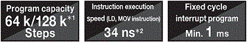
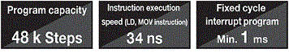
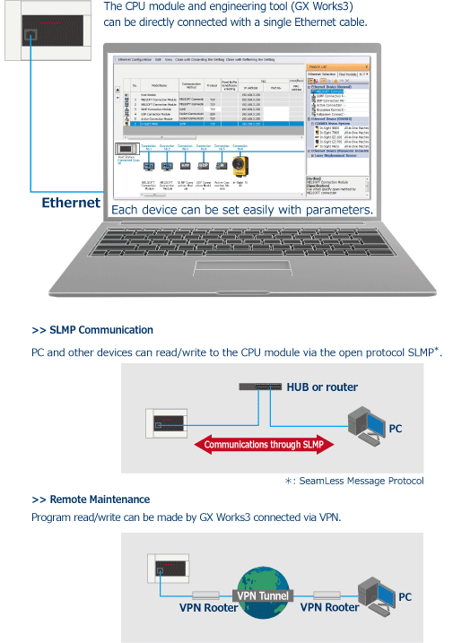
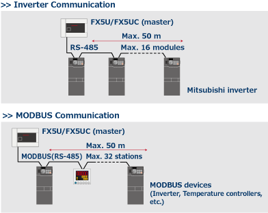
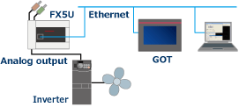
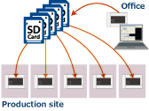
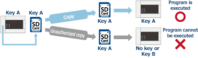

| Kinerja CPU |
FX5U/FX5UC |
Modul CPU FX5U/FX5UC memiliki CPU yang mampu memproses dengan kecepatan tinggi dengan kecepatan operasi instruksi (instruksi LD) sebesar 34 ns
*2.
Selain itu, CPU kini mendukung eksekusi program terstruktur dan beberapa program, bahasa ST, FB, dsb.

- *1Didukung oleh FX5U/FX5UC Ver. 1.100 atau yang lebih baru, dan nomor seri 17X**** (nomor seri 178**** (untuk FX5UC-32MT/DS-TS dan FX5UC-32MT/DSS-TS) atau yang lebih baru.)
Beberapa batasan pengoperasian berlaku saat 128 k langkah dipilih. Untuk detailnya, rujuk ke manual.
- *2Saat kapasitas program adalah 64 k langkah.
|
| FX5UJ |
Kecepatan modul CPU FX5UJ telah meningkat dua kali lipat dari FX3U.
Modul ini juga mampu menunjukkan kinerja yang sangat baik saat menggunakan modul fungsi cerdas dengan sejumlah besar data komunikasi.

|
| FX5S |
Modul CPU FX5S secara standar dilengkapi dengan konektor USB (Mini-B) internal dan port Ethernet internal.
Modul ini ringkas dan mengembunkan kinerja dasar yang tinggi, seperti fungsi pemosisian dan IoT, serta kemudahan penggunaan.
Hal ini memudahkan konfigurasi sistem pengguna.
|
| Port Ethernet terintegrasi |
Port komunikasi Ethernet dapat menangani komunikasi hingga 8 koneksi pada jaringan, dan dapat mendukung beberapa koneksi dengan komputer pribadi dan perangkat lainnya.
Selain itu, port komunikasi Ethernet dapat menangani komunikasi SLMP yang lancar dengan perangkat tingkat atas.
 |
Built-in RS-485 port
(MODBUS® function)
FX5U/FX5UC |
Hubungkan ke perangkat serial hingga sejauh 50 m dengan port RS-485 internal. Kontrol hingga 16 inverter Mitsubishi dimungkinkan dengan enam instruksi komunikasi inverter khusus.
MODBUS juga didukung dan dapat menghubungkan hingga 32 perangkat MODBUS seperti PLC, sensor, dan pengontrol suhu.
 |
Input/Output Analog Terpadu
(dengan keluaran alarm)
FX5U
|
FX5U dilengkapi dengan input analog 12-bit 2 ch dan output analog 1 ch.
Dengan pengaturan parameter, tidak diperlukan pemrograman.
Penggeseran nilai, penskalaan, dan output alarm juga dapat diatur dengan mudah dengan parameter.
Catatan:Hanya Input/Output Analog Bawaan FX5U.

Contoh kontrol inverter
menggunakan keluaran analog
|
Konektor USB (Mini-B) bawaan
FX5UJ/FX5S
|
Antarmuka lain untuk pemrograman, selain port Ethernet.
Konektor USB (Mini-B) yang dilengkapi standar memudahkan penyambungan ke GX Works3.
|
Slot Kartu Memori SD Terpadu
*1
|

Contoh produksi massal peralatan menggunakan kartu memori SD
Slot kartu memori SD internal memudahkan untuk memperbarui program dan produksi massal peralatan.
Data dapat dicatat dalam kartu memori SD, sehingga memudahkan analisis status sistem dan status produksi, dll.
- *1FX5S memerlukan FX5-SDCD secara terpisah.
|
| Keamanan |
MELSEC iQ-F memiliki fungsi keamanan tingkat lanjut (kata sandi berkas, kata sandi jarak jauh, kunci keamanan) untuk mencegah pencurian data dan operasi ilegal oleh orang yang tidak berwenang.

Contoh fungsi kunci keamanan
|
Sistem Kecepatan Tinggi
Komunikasi Bus |
Komunikasi bus sistem berkecepatan tinggi pada 1,5 K kata/ms (sekitar 150 kali lebih cepat dibandingkan dengan FX3U), bersama dengan CPU berkecepatan tinggi, memungkinkan MELSEC iQ-F menghasilkan kinerja maksimum bahkan saat modul fungsi cerdas komunikasi data berat digunakan.
|
| Sakelar RUN/STOP/RESET |
Sakelar RUN/STOP/RESET sudah terpasang.
PLC dapat di-boot ulang tanpa mematikan daya utama untuk debugging yang efisien. |
Tanpa baterai dan
Bebas perawatan |
Seri MELSEC iQ-F menyimpan program dan perangkat dalam memori nonvolatil seperti flash ROM, dan tidak memerlukan baterai.
- *Kapasitas perangkat yang ditampung dapat ditingkatkan dengan menggunakan baterai opsional.
|